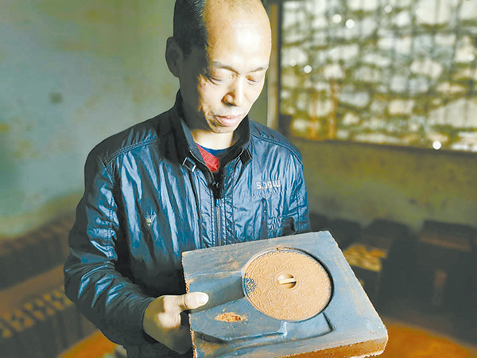
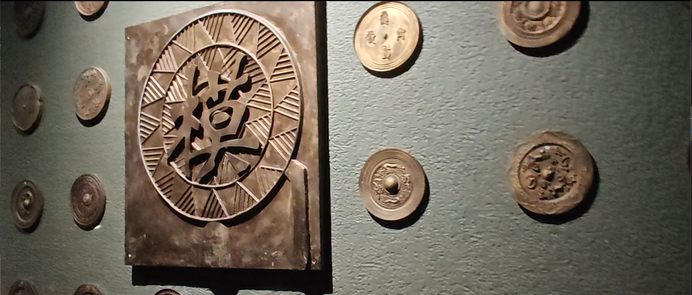
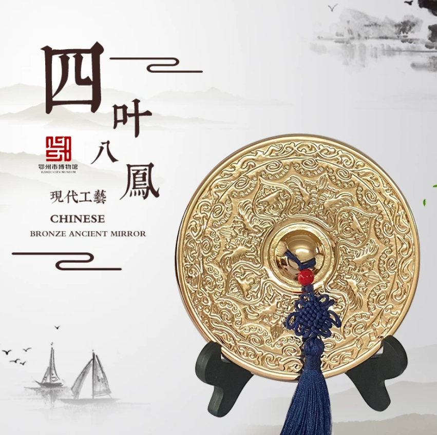

考古发掘：重见千年铜镜
鄂州是我国著名的古铜镜出土地，大量战国、汉、三国两晋时期铜镜经由考古发掘重见天日。出土铜镜不只是一件件器物，更是解读古代手工业、商贸往来、社会信仰的实物史料。考古工作对铜镜进行清理、修复、整理著录，让埋藏地下千百年的纹饰与铭文重新被世人看见，为后世研究保存珍贵物证。
古镜虽已褪去照容的实用功能，但青铜之上承载的审美、精神与记忆并未消散。从考古发掘到文创新生，古老铜镜在当代续写属于它的篇章。


鄂州是我国著名的古铜镜出土地，大量战国、汉、三国两晋时期铜镜经由考古发掘重见天日。出土铜镜不只是一件件器物，更是解读古代手工业、商贸往来、社会信仰的实物史料。考古工作对铜镜进行清理、修复、整理著录，让埋藏地下千百年的纹饰与铭文重新被世人看见，为后世研究保存珍贵物证。

各地博物馆将铜镜作为重要馆藏对外展出。鄂州出土的多面精品铜镜陈列于展厅之中，观众可以近距离观察镜钮、地纹、神兽、花鸟纹样。实物展览打破古籍文字的隔阂，普通大众得以直观感受青铜铸造艺术的魅力，古铜镜从地下文物转变为面向公众的文化载体。

如今铜镜纹样被提取出来，衍生出书签、徽章、复刻小镜、海报等各类文创产品。不再用于照面，但是山字纹、神兽纹、花鸟纹这些经典视觉符号，融入现代人的日常。传统审美脱离古墓葬，以轻巧鲜活的形式继续流传，实现传统文化的创造性转化。
铜镜早已退出实用舞台，但它承载的内涵依旧延续。学术研究不断梳理铜镜的时代脉络；实地调研、研学参观让青年走近本土文物；网络传播让鄂州铜镜走出地域限制。鉴物知史，一面古镜照见的不只是古人容颜，更是代代相传的东方文化精神。